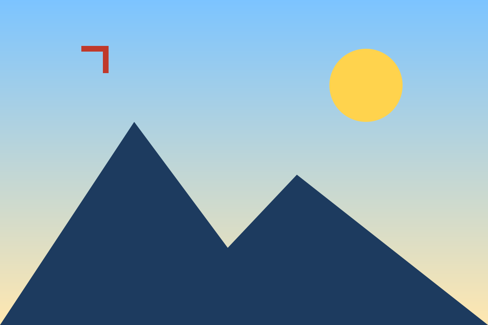

一般 img

img + srcset（應取最高解析度）

lazy 佔位圖 + data-src

div background-image
::before 偽元素背景
img 設 pointer-events:none

外層 pointer-events:none 的背景圖
inline !important pointer-events:none

透明 div 遮罩蓋住 img

spacer.gif 遮罩蓋住背景圖
頁面禁用右鍵（contextmenu preventDefault）

open shadow DOM
closed shadow DOM + pointer-events:none
canvas
inline SVG
video（檔案）
video（MSE blob，無法複製）
透明遮罩蓋住 video + 小型 SVG 按鈕
同來源 iframe
跨來源 iframe
pointer-events:none 的跨來源 iframe
跨來源透明 iframe 蓋住 img

沒有媒體（應出現提示，不開燈箱）